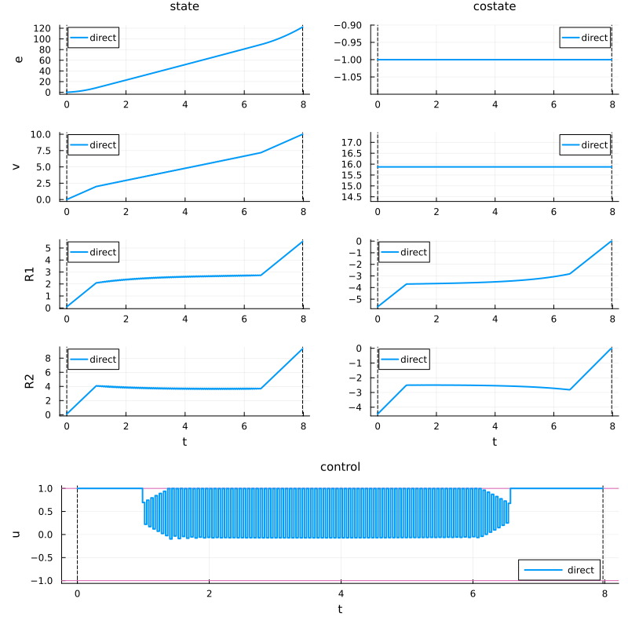
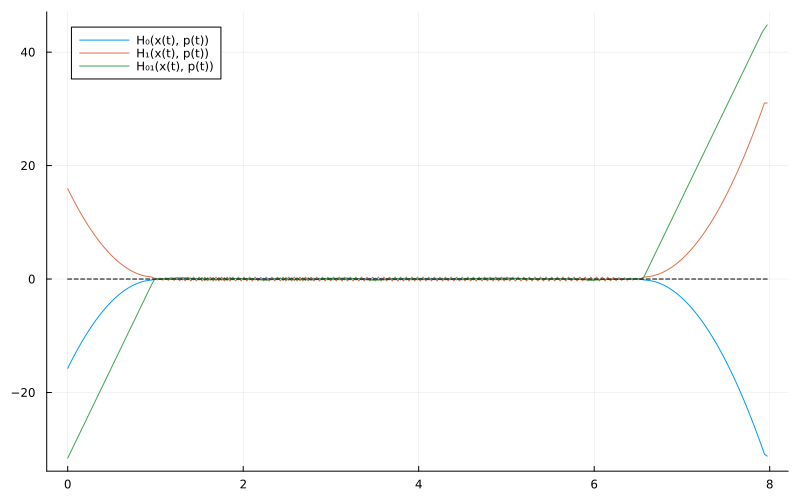
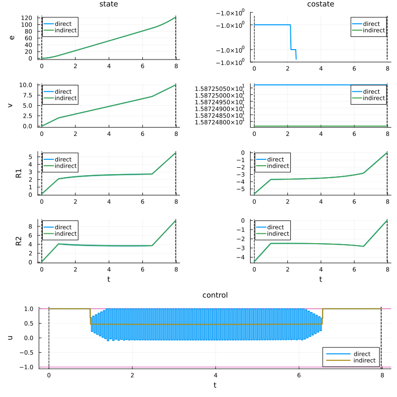
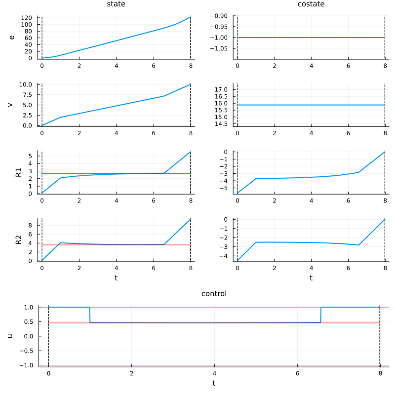

Two resistances case and turnpike property
In this section, we are interested in a more complex optimal control problem for membrane filtration systems, where we consider two internal resistances. This problem is currently under investigation, and this section shows some preliminary numerical results about the turnpike property.
In fact, Problem (OCP) has the turnpike property, which roughly speaking means that the optimal solution spends most of its time in a neighborhood of the steady-state solution (during the singular arc) for long time horizons. In particular, Problem (OCP) has the exact turnpike property, which means that the singular state corresponds to the steady-state solution.
In this more complex example, we will numerically see the non-exact turnpike property, i.e., the singular arc converges to the steady-state solution but not exactly, due to controllability issues.
To do this, we will first solve the optimal control problem with the direct method, then with the indirect method (shooting method) to get a more precise solution, and then investigate the turnpike property.
Before this, let's set up the required libraries.
using Plots # For plotting and visualization
using OptimalControl # Main package for optimal control problems
using NLPModelsIpopt # Interface for Ipopt nonlinear solver
using OrdinaryDiffEq # For solving differential equations
using LinearAlgebra: norm # For vector norm computations
using MINPACK # For nonlinear equation solving (shooting method)
using DifferentiationInterface # For automatic differentiation
using ForwardDiff # Forward mode automatic differentiation
using Ipopt, Optimization, OptimizationMOI # Additional optimization toolsProblem definition
Let's define the following optimal control problem, which corresponds to the Problem (OCP) with two resistances $R_1$ and $R_2$, connected through the cost function.
# Time and boundary conditions
t0 = 0. # Initial time
vf = 10. # Final volume to be achieved
x0 = [0., 0., 0.1, 0.1] # Initial state
# Model component functions
e(x) = 1 + x[3] + x[4] # Energy flow
g(x) = 1 # Volume flow
f11(x) = 1 # Resistance 1 dynamics (filtration mode)
f12(x) = - x[3] # Resistance 1 dynamics (backwash mode) - negative for cleaning
f21(x) = 2 # Resistance 2 dynamics (filtration mode)
f22(x) = - 1.5*x[4] # Resistance 2 dynamics (backwash mode)
# Vector fields for the control-affine system
Ff(x) = [e(x); g(x); f11(x); f21(x)] # Filtration vector field (u = +1)
Fb(x) = [e(x); -g(x); f12(x); f22(x)] # Backwash vector field (u = -1)
F0(x) = Ff(x) + Fb(x) # Drift vector field (symmetric part)
F1(x) = Ff(x) - Fb(x) # Control vector field (antisymmetric part)
# Define the optimal control problem using OptimalControl.jl DSL
ocp = @def begin
tf ∈ R, variable # Free final time
t ∈ [t0, tf], time # Time
x = (e, v, R1, R2) ∈ R⁴, state # State
u ∈ R, control # Control
-1 ≤ u(t) ≤ 1 # Control's constraint
x(t0) == x0 # Initial state
v(tf) == vf # Final state
ẋ(t) == F0(x(t)) + u(t)*F1(x(t)) # Dynamics
e(tf) → min # Cost
endAbstract definition:
tf ∈ R, variable
t ∈ [t0, tf], time
x = ((e, v, R1, R2) ∈ R⁴, state)
u ∈ R, control
-1 ≤ u(t) ≤ 1
x(t0) == x0
v(tf) == vf
ẋ(t) == F0(x(t)) + u(t) * F1(x(t))
e(tf) → min
The (autonomous) optimal control problem is of the form:
minimize J(x, u, tf) = g(x(0.0), x(tf), tf)
subject to
ẋ(t) = f(x(t), u(t), tf), t in [0.0, tf] a.e.,
ϕ₋ ≤ ϕ(x(0.0), x(tf), tf) ≤ ϕ₊,
u₋ ≤ u(t) ≤ u₊,
where x(t) = (e(t), v(t), R1(t), R2(t)) ∈ R⁴, u(t) ∈ R and tf ∈ R.
Direct method
Let's now solve this optimal control problem by using the direct method, thanks to the solve function from OptimalControl.jl.
# Solve the optimal control problem using direct method (collocation)
direct_sol = solve(ocp)
# Plot the solution trajectory showing states, controls, and costates over time
plt_sol = plot(direct_sol, label = "direct", size = (800, 800))
As we can see, mainly during the singular arc, the solution is not precise. Such imprecision is well-known for direct methods applied to problems with singular controls, and a way to overcome this issue is to use the indirect method, with the direct method solution as an initial guess.
Structure of the solution
To use the indirect method, we first need to determine the structure associated with the solution of the studied optimal control problem. In this case, the structure of the solution is composed of three arcs: first a bang arc with control $u = +1$, then a singular arc $u = u_s(x,p)$, and finally another bang arc with control $u = +1$; where the singular control $u_s(x,p)$ is defined by
\[u_s(x,p) = -\frac{H_{001}(x,p)}{H_{101}(x,p)} = \frac{\{H_0, \{H_0, H_1\}\}(x,p)}{\{H_1, \{H_0, H_1\}\}(x,p)}\]
and where $\{H_0, H_1\}$ denotes the classical Poisson bracket.
A way to ensure that the structure is given by this sequence is to check the sign of $H_1$ along the direct solution trajectory.
# Lift into (x,λ) space
H0 = Lift(F0)
H1 = Lift(F1)
# Lie bracket
H01 = @Lie {H0, H1}
H001 = @Lie {H0, H01}
H101 = @Lie {H1, H01}
# Singular control
us(x, p) = -H001(x, p) / H101(x, p)
# Pseudo-Hamiltonian
H(x,p,u) = H0(x,p) + u*H1(x,p)
# Flows
ϕ0 = Flow(ocp, (x,p,tf) -> -1)
ϕ1 = Flow(ocp, (x,p,tf) -> +1)
ϕs = Flow(ocp, (x,p,tf) -> us(x,p))
# Get direct trajectory
time = time_grid(direct_sol)
x = state(direct_sol)
u = control(direct_sol)
p = costate(direct_sol)
tf = time[end]
# Structure of the solution *
plt = plot(size = (800, 500))
plot!(plt, t -> H0(x(t), p(t)), t0, tf, label = "H₀(x(t), p(t))")
plot!(plt, t -> H1(x(t), p(t)), t0, tf, label = "H₁(x(t), p(t))")
plot!(plt, t -> H01(x(t), p(t)), t0, tf, label = "H₀₁(x(t), p(t))")
plot!(plt, [t0, tf], [0, 0], c = :black, ls = :dash, label = nothing)
Indirect shooting method
The goal now is to get the solution by the indirect shooting method. To do this, we need to solve a boundary value problem (BVP) where the boundary conditions are given by the transversality conditions and the continuity conditions at the switching times. In particular, the goal is to find the initial costate $p_1(t_0)$, $p_2(t_0)$, and $p_3(t_0)$ and the switching times $t_1$ and $t_2$ that satisfy:
- The terminal condition:
\[v(t_f) = v_f,\]
- The transversality condition:
\[p_3(t_f) = p_4(t_f) = 0,\]
- Condition related to how to hit the singular locus:
\[H_0(x(t_1), p(t_1)) = H_1(x(t_1), p(t_1)) = H_{01}(x(t_1), p(t_1)) = 0.\]
This is done by finding a zero of the shooting function $S$ thanks to the fsolve function from the NonlinearSolve.jl package. The optimal trajectory is then plotted to be compared to the direct solution.
# Shooting function
function shoot!(s, ξ)
pv0, pr10, pr20, t1, t2, tf = ξ
x1, p1 = ϕ1(t0, x0, [-1, pv0, pr10, pr20], t1)
x2, p2 = ϕs(t1, x1, p1, t2)
xf, pf = ϕ1(t2, x2, p2, tf)
s[1] = xf[2] - vf
s[2:3] = pf[3:4]
s[4] = H0(x1, p1)
s[5] = H1(x1, p1)
s[6] = H01(x1, p1)
end
# Jacobian of the shooting function
jshoot! = (js, ξ) -> jacobian!(shoot!, similar(ξ), js, AutoForwardDiff(), ξ)
# Initial guess
p0 = p(t0)
η = 1e-3
time_ = time[ u.(time) .≤ 1-η ]
t1 = time_[1]; t2 = time_[end]
ξ = [p0[2:4]..., t1, t2, tf]
# Resolution of S(ξ) = 0
indirect_sol = fsolve(shoot!, jshoot!, ξ)
# Plot
pv0, pr10, pr20, t1, t2, tf = indirect_sol.x
p0 = [-1, pv0, pr10, pr20]
ϕ = ϕ1 * (t1, ϕs) * (t2, ϕ1)
flow_sol = ϕ((t0, tf), x0, p0; saveat=range(t0, tf, 1000))
plot!(plt_sol, flow_sol, label="indirect")
Turnpike property
The goal is now to numerically highlight the turnpike property of the studied optimal control problem. To do this, we find the optimal steady-state solution, in the sense that we want to find the triplet $(R_1^\star, R_2^\star, u^\star) \in \mathbb R^3$ that minimizes the "optimal weighted cost" while satisfying the constraints of being constant (steady-state). In other words, $(R_1^\star, R_2^\star, u^\star)$ is the solution of the following optimization problem:
\[\begin{aligned} \min_{R_1, R_2, u} & f^0(R_1, R_2,u) - p_2 \ f_2(R_1, R_2, u) \\ \text{s.t.} &\quad f_{R_1}(R_1, u) = 0, \\ &\quad f_{R_2}(R_2, u) = 0. \end{aligned}\]
where:
- $\dot e = f^0(R_1, R_2, u)$ is the energy flow (cost),
- $\dot{R_1} = f_{R_1}(R_1, u)$ and $\dot{R_2} = f_{R_2}(R_2, u)$ corresponds respectively to the dynamics of the first and second resistance ($R_1$ and $R_2$),
- $p_2$ is the optimal costate variable associated with the state $v$. This is computed thanks to the indirect method.
This optimization problem is solved thanks to the Optimization.jl package.
# Constraints
function cons!(dξ, ξ,_)
R1, R2, u = ξ
x = [0., 0., R1, R2]
dx = F0(x) + u*F1(x)
dξ .= dx[3:4]
end
# Objective
function obj(ξ,_)
R1, R2, u = ξ
x = [0., 0., R1, R2]
dx = F0(x) + u*F1(x)
return dx[1] - pv0*dx[2]
end
# Initial guess
x, p = ϕ(t0, x0, p0, (t1 + t2)/2)
u = us(x, p)
ξ = [x[3:4]; u]
# Definition of the optimization problem
optprob = OptimizationFunction(obj, AutoForwardDiff(), cons = cons!)
prob = OptimizationProblem(optprob, ξ, nothing, lcons = [0., 0.], ucons = [0., 0.])
opt_sol = Optimization.solve(prob, Ipopt.Optimizer())
# Plot
st = opt_sol.u
plt_sol = plot(flow_sol, label = "", size = (800, 800))
plot!(plt_sol, [t0, tf], [st[1], st[1]], subplot = 3, label = "", c = :red)
plot!(plt_sol, [t0, tf], [st[2], st[2]], subplot = 4, label = "", c = :red)
plot!(plt_sol, [t0, tf], [st[3], st[3]], subplot = 9, label = "", c = :red)
As we can see, the optimal control solution is close to the steady-state solution during the singular arc, highlighting the turnpike property.